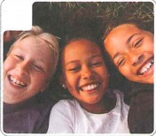
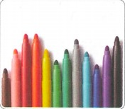
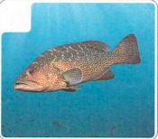
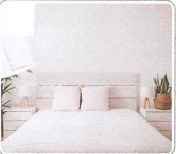
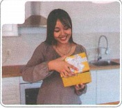
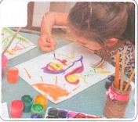
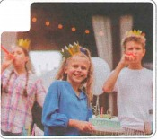
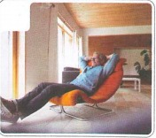

小雪，生日快乐！
Chúc mừng sinh nhật Tiểu Tuyết!
HSK 2 · Bài 6
🔥 Khởi động · 热身
1. Lựa chọn hình ảnh tương ứng với các từ ngữ sau.
A 鱼 yú B 画笔 huàbǐ C 床 chuáng D 快乐 kuàilè




2. Lựa chọn hình ảnh tương ứng với các từ ngữ sau.
A 画画 huà huà B 过生日 guò shēngrì C 很舒服 hěn shūfu D 打开礼物 dǎkāi lǐwù




🎧 Nghe Bài khóa 1
（1）王一雪和刘明要准备什么礼物？
（2）王一雪什么时候去买礼物？
📚 Từ vựng 1
💬 Đọc Bài khóa 1
（1）明天是谁的生日？
（2）他们为什么觉得画笔是很好的礼物？
🧠 Tính từ lặp lại · 形容词重叠
Tính từ đơn âm tiết “A” thường lặp thành AA; tính từ song âm tiết “AB” thường lặp thành AABB. Dạng lặp biểu thị mức độ cao hoặc sắc thái yêu thích, thân mật.
我再给她买个大大的生日蛋糕。
这只猫小小的，真让人喜欢。
一雪的女儿每天都漂漂亮亮的。
Hoàn thành hội thoại:
今天买的苹果 ________。B：我吃了一个，也很好吃。
这家饭店的饺子 ________，我一次能吃二十个。
这几天你在家 ________ 休息，别出去了。
🎧 Nghe Bài khóa 2
（1）刘小雪想画什么？
（2）刘小明想画什么？
📚 Từ vựng 2
💬 Đọc Bài khóa 2
（1）爸爸、妈妈送了小雪什么礼物？
（2）小雪喜欢这个礼物吗？
🧠 Cụm từ cố định “什么的”
“什么的” dùng sau một vài ví dụ liệt kê, mang nghĩa vân vân / những thứ như..., cho biết danh sách chưa kể hết.
画我们的家！有爸爸、妈妈、弟弟，还有黑色的狗、白色的猫什么的。
桌子上有电脑、杯子、书和画笔什么的。
她拿来了一些水、面包和苹果什么的。
你爱吃什么？ B：________，我都爱吃。
那间教室里有些什么？ B：________。
休息的时候，你喜欢做些什么？ B：________。
🎧 Nghe Bài khóa 3
（1）今天的东西都是谁爱吃的？
（2）他们吃完饭要做什么？
📚 Từ vựng 3
💬 Đọc Bài khóa 3
（1）刘明和王一雪准备了哪些吃的？
（2）刘小雪为什么觉得过生日真好？
🧠 Trợ từ kết cấu “地”
“地” thường đặt giữa tính từ/trạng ngữ và động từ để biểu thị cách thức hoặc trạng thái của hành động.
过生日就要吃好吃的，还要高高兴兴地玩。
老师早早地到了教室。
爸爸很快地吃完早饭，就去上班了。
她生病了，______ 回房间休息了。（早）
你回家 ______ 睡一觉，明天也别来上班了。（好）
他拿到礼物 ______ 说：“这个礼物太好了！”（高兴）
🎧 Nghe Bài khóa 4
听两遍课文，判断正误。Nghe bài khóa hai lượt và phán đoán đúng sai.
（1）女儿学会做面条儿了。（ ）
（2）王一雪今天高高兴兴地过了个生日。（ ）
📚 Từ vựng 4
📖 Đọc Bài khóa 4
（1）今天他们一起做什么了？
（2）孩子们明天为什么要晚点儿起床？
✏️ Bài tập tổng hợp
Chọn từ: A 忘 B 快乐 C 打开 D 画 E 床
（1）明天10点去小雪家，你别 了。
（2）衣服在 上，你看看想穿哪一件？
（3）看，这是我妹妹 的，漂亮不漂亮？
（4）这是送你的礼物，快 看看。
（5）今天我过了一个非常 的生日，谢谢爸爸、妈妈！
高高兴兴地
大家高高兴兴地给他 ________。
什么的
桌子上有电脑、杯子 ________。
长长的
爷爷过生日，爸爸给他做了 ________ 面条儿。
舒服地
下班了，他 ________ 在家休息。
🎭 Hoạt động trên lớp · Đóng vai sinh nhật
Ba người một nhóm: một người đóng vai người được tổ chức sinh nhật, hai người đóng vai bạn bè. Cùng chúc mừng sinh nhật, tặng quà, hỏi điều ước; người được tổ chức sinh nhật nói muốn ăn gì, muốn đi đâu chơi. Cố gắng sử dụng từ mới và ba điểm ngữ pháp của Bài 6.
B：生日快乐！
……
✅ Tổng kết Bài 6
小雪，生日快乐！
✓ 形容词重叠 · Tính từ lặp lại
✓ 固定短语 “什么的”
✓ 结构助词 “地”
✓ Từ vựng về sinh nhật, quà tặng, món ăn và trạng thái